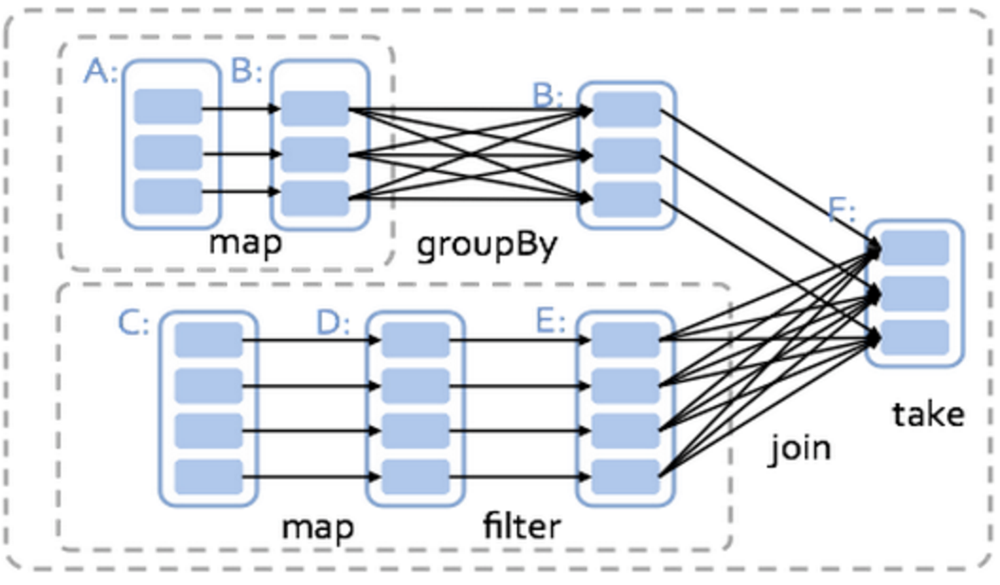
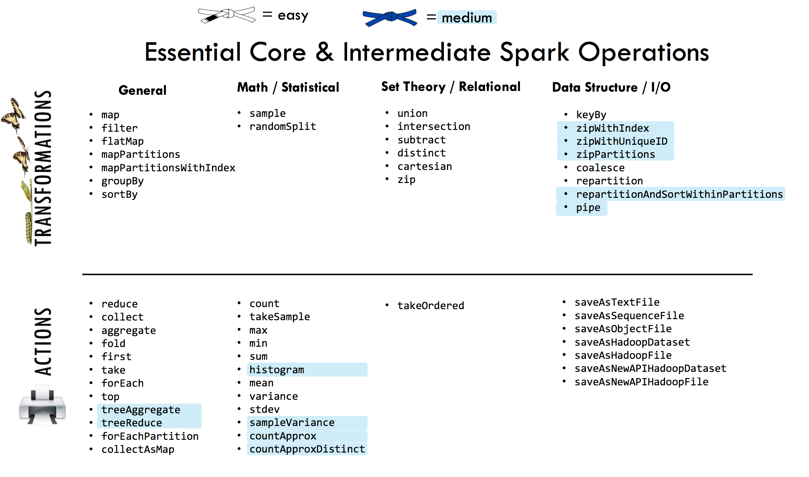

The Urban Institute's Approach to Big Data Statistics
Affordability from Elasticity
Standing Clusters - either in Cloud or on Premise are unaffordable.
Accessibility as a General Concern
More on Spark in a Minute
Relatively Familiar Languages
Development Environments in Browser
Also Cheap:
Four R3.8X Large EC2 Instances (Renting Four Computers in the Sky) gets you:
All for ~$10/Hour
A distributed in-memory framework for big data analysis.
Michael Franklin now at UChicago!
Spark's RDD works by executing code on partitions - logical splits of the data by observation (or row) - that are spread across a cluster of machines.
The RDD solved an important problem - efficient fault tolerance in distributed memory. While, Hadoop relied on replication, which is untenable (too expensive) in distributed memory, the RDD uses a Directed Acyclic Graph model.
Transformation: Operations on an RDD that don't return or write anything.
Action: Operations on an RDD that return or write a result. Executes all required prior transformations in the DAG.
Actions Return Something and/or Require DAG Execution
Optimization Methods: L-BFGS & SGD
This solves for the GLM and thus also fixed effects and difference-in-difference models.
However, other methods are not yet included (e.g. random effects) or require different not-yet-developed optimization in distributed memory (e.g. quantile regression).
SparkR is now using the newer dataframe API, which replaces some aspects of the RDD, though many of the underlying principals are the same.